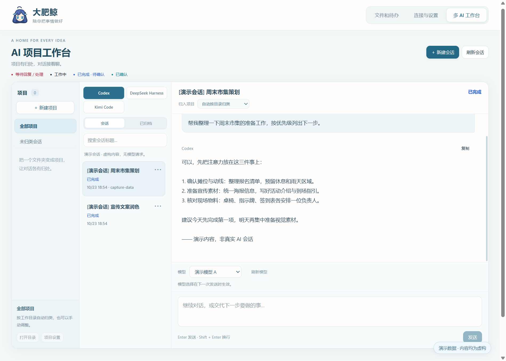
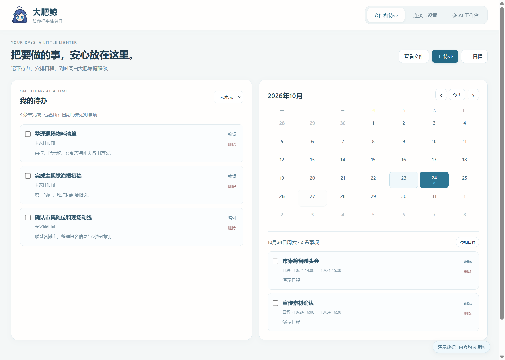
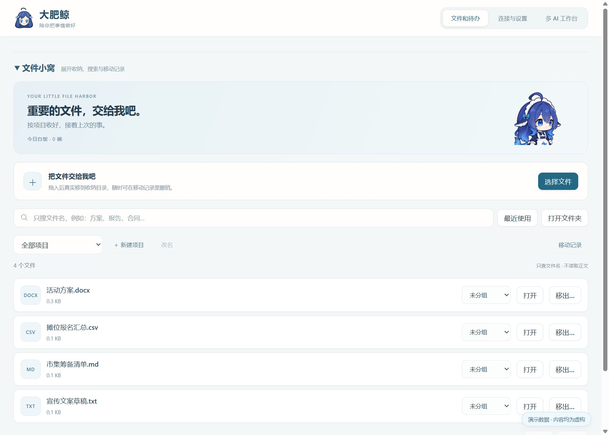

一只会互动的鲸鱼娘
原生模型动作、点头招手、桌面互动。点一下饭碗，让她吃口白饭；工作完成时，也让她替你记着那条还没确认的提醒。
桌面上陪你吃饭的小鲸鱼，也是整理文件、安排待办、继续 AI 项目对话的工作台。把零散的事放到一起，让该记住的事有个着落。
原生模型动作、点头招手、桌面互动。点一下饭碗，让她吃口白饭；工作完成时，也让她替你记着那条还没确认的提醒。
按工作文件夹整理已有客户端的会话，在工作台查看、回复与选择可用模型。Codex、DeepSeek Harness 与 Kimi Code 的能力取决于各自登录、原生接口和连接状态。
按文件名检索和分组，查看移动记录；网页、PDF、文本及 Word 文字内容可在内嵌窗口预览。Word 为只读内容预览，不提供文档编辑。
记录无日期待办，或为日程设置时间与提前提醒。大肥鲸运行时提醒，退出期间错过的提醒会在下次启动补上；“知道了”和“完成事项”分别操作。
以下为功能演示截图，使用演示项目、文件与待办，不含真实账号或个人聊天内容。



文件收纳会真实移动普通文件，请留意收纳目录与移动记录。下载包不包含开发者账号、聊天记录或个人文件；它也不会替你登录 AI 账号。
已验证 Windows 11 x64 · 便携 ZIP
219,302,217 bytes · 约 219.3 MB / 209.14 MiB
更新日期：2026-10-23
a886f5245caf30b4c53bea123ae9f824dd5acfb956583788f6841bd3f43eb504便携包带有运行环境，不需要安装 Python、Node.js 或编译工具。AI 功能使用你本机的客户端与登录状态，包内不附带账号、密钥或聊天数据；客户端未就绪时，相应能力会显示受限。
当前版本只完成了 Windows 11 x64 验证。没有据此承诺 Windows 10、ARM 或其他操作系统的兼容性。
提醒由本机运行中的大肥鲸处理。退出期间不会弹出提醒，错过的待办或日程提醒在下次启动时补上。点击“知道了”只确认提醒，事项完成需要另行勾选。
目前提供 Word 文档的只读文字内容预览。它不等同于 Word 编辑器，也不承诺完整还原文档排版。
当前发布包尚未数字签名。请核对本页链接指向的发布账号、版本与 SHA-256，并遵循系统显示的安全提示；如果不能确认来源，请先不要运行。
鲸鱼娘模型基于 Coopanion 项目。第三方来源及许可说明随下载包提供，使用与分发时请一并保留并阅读；发布说明也会列出本次版本信息。